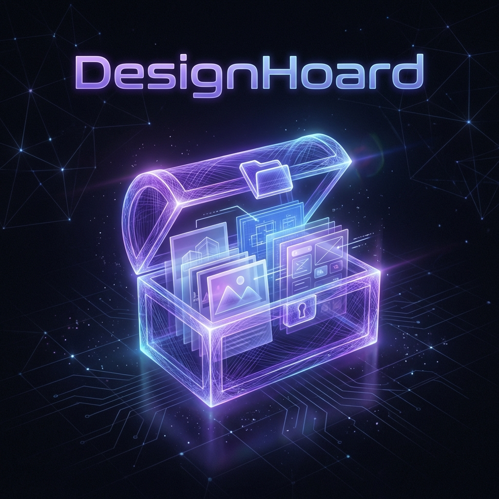

EP07 核心路演
点击查看完整路演 →
Project DesignHoard
一款解决了设计师“凌晨2:30崩溃”痛点的本地素材管理工具。基于 Python + PyWebView 开发，支持 8 线程并发下载与 Web 解析。
查看项目路演与复盘 →
从传统空间设计师，到能够独立开发 AI 应用的产品经理。
这是我的数字化毕业展，见证我在 4 周内的蜕变。
class Townsend(ProductManager):
def __init__(self):
self.background = "Landscape Architect"
self.new_skill = "Vibe Coding"
def evolve(self):
return "AI Product Builder 🚀"7 次作业，7 个脚印，从畏惧代码到掌控 AI。
一款解决了设计师“凌晨2:30崩溃”痛点的本地素材管理工具。基于 Python + PyWebView 开发，支持 8 线程并发下载与 Web 解析。
查看项目路演与复盘 →第一次用 Cursor 写代码。从这行代码开始，我意识到“网页”不再是神秘的黑盒，而是我可以随意搭建的乐高积木。
接入 DeepSeek API，实现了一个简单的对话机器。理解了 Token、Context 与 Prompt 的关系。
不仅是写代码，而是用产品思维去 Coding。在这个阶段，我学会了如何向 AI 下达精准的业务指令。
拥抱 AI，改变思维
Python 基础语法
Hello World to World
给后来的伙伴：我的学习路径与心得
“不做代码重构的瘾君子，它不是玩具，而是陪我解决问题的战友。”—— 摘自 DesignHoard 开发复盘
不要害怕报错。报错是 AI 的事，作为产品经理，不仅要会提需求，更要学会“验收”。
把自己当成 PM，把 AI 当成高级工程师。用具体的业务逻辑去驱动代码，而不是扣语法细节。
不要为了学技术而做 Demo。只有解决了自己真实的痛点（如 DesignHoard），你才有动力把产品打磨到极致。
我是 Townsend，一名拥有 7 年经验的数字化产品经理。
在参加 WaytoAGI 训练营之前，我更多是作为“需求提出方”。
现在，我是一名 Full-Stack AI Builder。我不再等待技术排期，而是自己用 AI 验证想法。